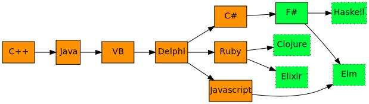
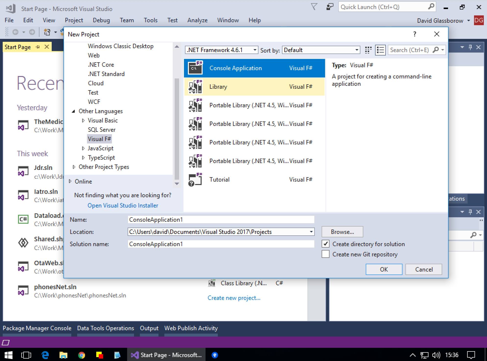
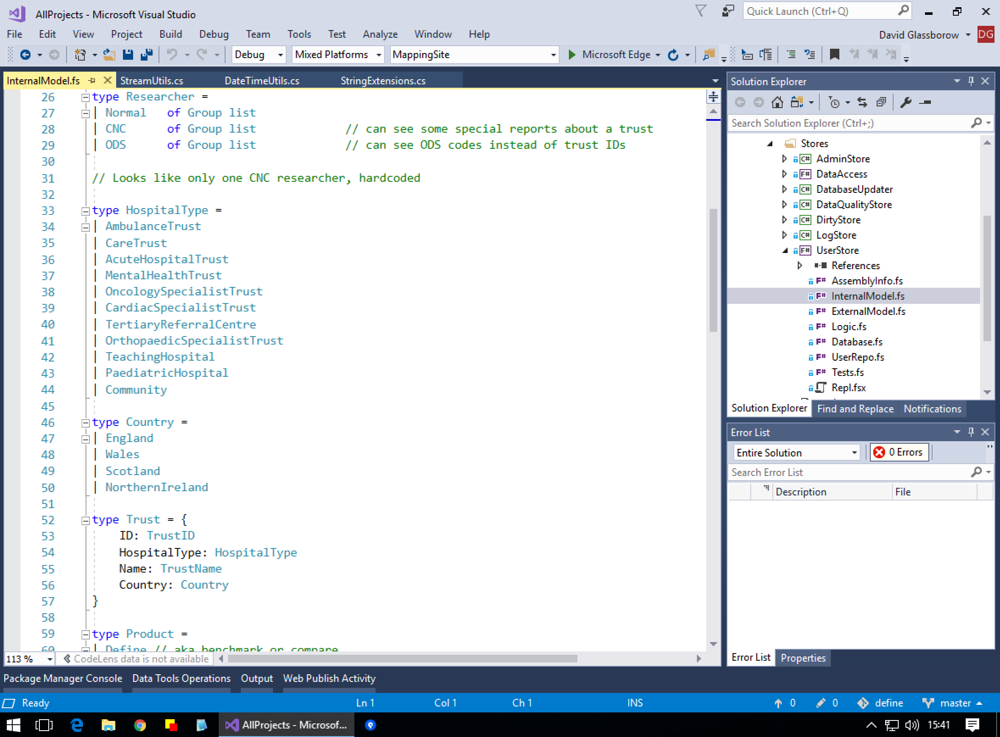
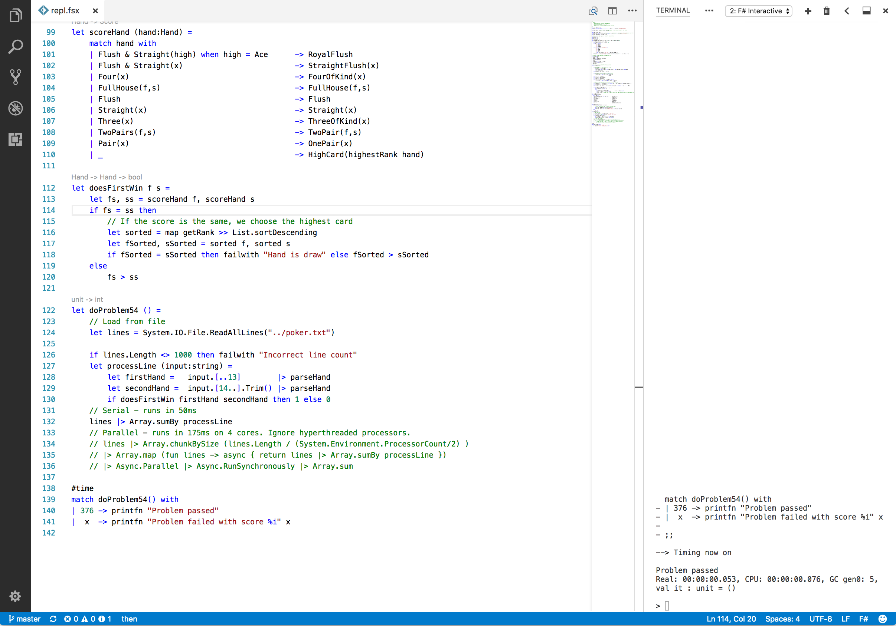
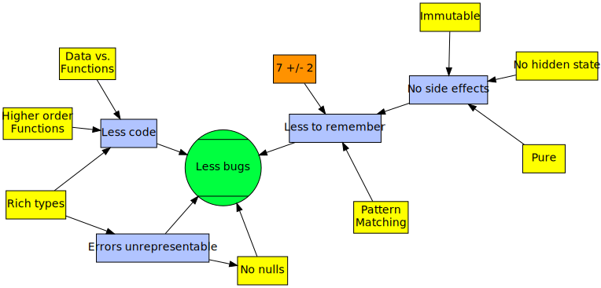

val string : value:'T -> string
Full name: Microsoft.FSharp.Core.Operators.string
--------------------
type string = System.String
Full name: Microsoft.FSharp.Core.string
module List
from Microsoft.FSharp.Collections
--------------------
type List<'T> =
| ( [] )
| ( :: ) of Head: 'T * Tail: 'T list
interface IReadOnlyCollection<'T>
interface IEnumerable
interface IEnumerable<'T>
member GetSlice : startIndex:int option * endIndex:int option -> 'T list
member Head : 'T
member IsEmpty : bool
member Item : index:int -> 'T with get
member Length : int
member Tail : 'T list
static member Cons : head:'T * tail:'T list -> 'T list
static member Empty : 'T list
Full name: Microsoft.FSharp.Collections.List<_>
Full name: Microsoft.FSharp.Collections.List.reduce
Full name: Microsoft.FSharp.Core.option<_>
from Microsoft.FSharp.Core
Full name: Microsoft.FSharp.Core.ExtraTopLevelOperators.printfn
val int : value:'T -> int (requires member op_Explicit)
Full name: Microsoft.FSharp.Core.Operators.int
--------------------
type int = int32
Full name: Microsoft.FSharp.Core.int
--------------------
type int<'Measure> = int
Full name: Microsoft.FSharp.Core.int<_>
type MeasureAttribute =
inherit Attribute
new : unit -> MeasureAttribute
Full name: Microsoft.FSharp.Core.MeasureAttribute
--------------------
new : unit -> MeasureAttribute
…you have to say to yourself:
“I don’t know what I’m doing. We, as a field, don’t know what we’re doing. We don’t know what programming is, we don’t know what computing is, we don’t even know what a computer is.”
And once you truly understand that, once you truly believe that – then you’re free, and you can think anything.
Bret Victor, The Future of Programming
F# and
Functional Programming

How I got here

Why I care
- Fun learning something new
- Interesting technology from Microsoft
- Usable in my day to day job
- Makes my C# coding better
F#
- ML (1974) / OCaml
- Open source since 2005
- Functional First but very pragmatic
- Full interop with C#
- Runs everywhere C# does + a few more
Send an email C#
1: 2: 3: 4: 5: 6: 7: 8: 9: 10: 11: 12: 13: 14: 15: 16: 17: 18: 19: 20: 21: 22: 23: |
|
Send an email F#
1: 2: 3: 4: 5: 6: 7: 8: 9: 10: 11: 12: 13: 14: 15: |
|
- Whitespace
- Inference
- Superset of C#



Functional programming
- I have to think less, the compiler does more for me
- Think SQL Select
Controlling complexity is the essence of computer programming.

Core values
- Seperate data and processes
- Transform into new data
- Sane defaults
- Reason about code
- Composiblity: Lego
- Declarative
- Functions: first class, making them, changing them
There are two ways of constructing a software design: One way is to make it so simple that there are obviously no deficiencies and the other way is to make it so complicated that there are no obvious deficiencies.
Object Orientation
- Object oriented programming makes code understandable by encapsulating moving parts. Functional programming makes code understandable by minimizing moving parts.
Object Orientation
The problem with object-oriented languages is they’ve got all this implicit environment that they carry around with them. You wanted a banana but what you got was a gorilla holding the banana and the entire jungle.
- Packets of hidden state, hard to reason about
- Things can change behind your back, especially in multi-threading
- Model with Subclassing, but not always worth the hassle ?
Advantages
- Manage complexity
- Less stressful to code
- More powerful, program at a higher level
- Think differently, apply it to other langauges
- Pit of success
- REPL
Disadvantages
- More abstract
- Mathematical naming
- Different way of thinking
- More thinking, less typing, which is harder
- Rabbit hole: Haskell, Dependant types, Category Theory
F# features
1: 2: 3: 4: 5: 6: 7: 8: 9: 10: |
|
Pipelining
C#
1: 2: |
|
F#
1: 2: |
|
Union types
1: 2: 3: 4: 5: 6: 7: 8: 9: 10: |
|
Union types
1: 2: 3: 4: 5: 6: 7: 8: 9: 10: 11: 12: 13: 14: 15: 16: |
|
Union types
1: 2: 3: 4: 5: 6: 7: 8: |
|
Union types
1: 2: 3: 4: 5: |
|
Record types
1: 2: 3: |
|
Units of measure
1: 2: 3: 4: 5: 6: 7: 8: 9: 10: |
|
Type Providers
- Databases (ORMS, querys, sprocs)
- Regular Expressions
- AWS S3 / Azure storage
- WMI
- OData
- Hadoop
- Slack
- R
REPL
Where to use F#
-
REPL
- utilities
- machine learning
- exploring
-
Complex
- complex logic and domains
- async code
-
Functional
- pipelines
- parsers
Where NOT to use F#
- Basic mvc
- Xamarin
Applying FP outside of FP
Applying functional thinkings to other languages
F# -> C#
- Generics
- Nullable types
- LINQ
- Async/Await
- Tuples
- Pattern matching
- Record types
- Union types
- C# with static functions and dtos
1: 2: 3: 4: 5: 6: 7: 8: 9: 10: 11: 12: 13: |
|
Javascript
Philosophy
- Logic, Sets, Programming
- Category theory
- Discovered -or- the way we think?
Find out more
F#
Find out more
Functional Programming
Thought for the day
Always code as if the guy who ends up maintaining your code will be a violent psychopath who knows where you live.